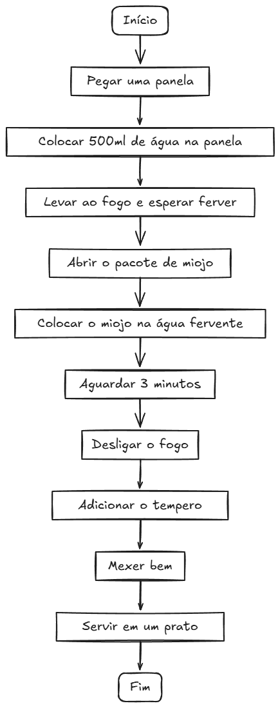

O que é Lógica de Programação?
É a técnica de organizar pensamentos para resolver problemas de forma que um computador possa entender e executar.
Imagine como uma receita de bolo - cada passo precisa estar na ordem certa!
Por que é importante?
- Desenvolve seu raciocínio
- Ajuda a resolver problemas complexos
- É a base para qualquer linguagem de programação
Fluxogramas
Fluxogramas são diagramas visuais que representam um processo, algoritmo ou fluxo de
trabalho por meio de símbolos padronizados e setas que indicam a direção do fluxo.
- Oval (INÍCIO/FIM) → Indica o começo ou término.
- Retângulo (Ação) → Representa um processo ou cálculo.
- Paralelogramo (Entrada/Saída) → Mostra inputs (ex: scanf) ou outputs (ex: printf).
- Losango (Condição) → Usado para decisões (ex: if/else).
- Setas → Mostram a direção do fluxo.
Exemplo Prático
Problema: Calcular a média de duas notas
- Pedir a primeira nota
- Pedir a segunda nota
- Somar as duas notas
- Dividir por 2
- Mostrar o resultado
#include <stdio.h>
#include <stdlib.h>
int main() {
// Quais são as variáveis?
float nota1, nota2, media;
// Entrada de dados
printf("Digite a primeira nota: ");
scanf("%f", ¬a1);
printf("Digite a segunda nota: ");
scanf("%f", ¬a2);
// Processamento
media = (nota1 + nota2) / 2;
// Saída de dados
printf("A média é: %.2f\n", media);
return 0;
}

Exercícios
Exercício 1: Elabore um algoritmo em linguagem natural (passo a passo) que descreva como preparar um miojo instantâneo.
Início
- Pegar uma panela
- Colocar 500ml de água na panela
- Levar ao fogo e esperar ferver
- Abrir o pacote de miojo
- Colocar o miojo na água fervente
- Aguardar 3 minutos
- Desligar o fogo
- Adicionar o tempero
- Mexer bem
- Servir em um prato
Fim
Exercício 2: Com base no exercício anterior, crie um fluxograma usando símbolos padrão. Utilize o material apresentado para referência.
